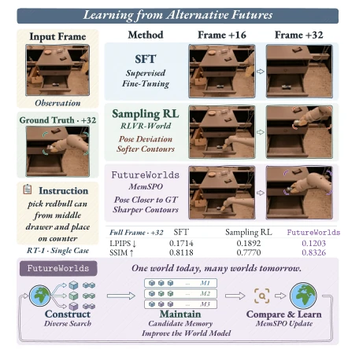
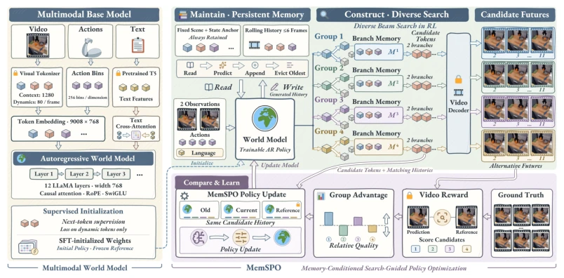
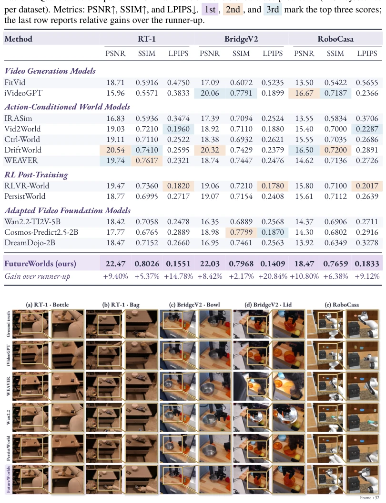
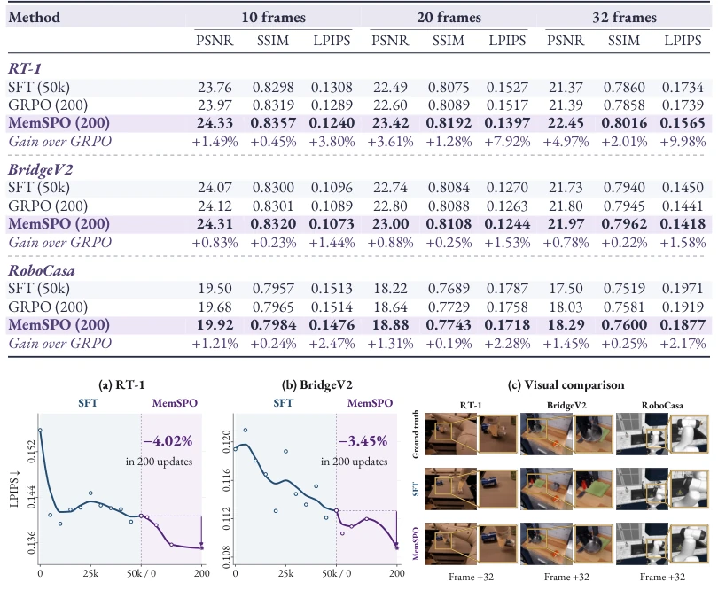
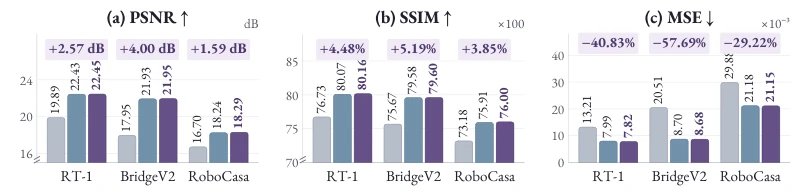
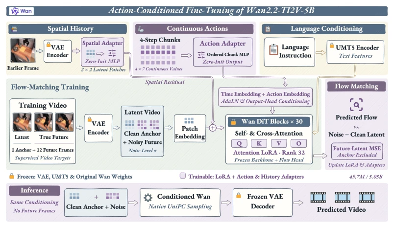
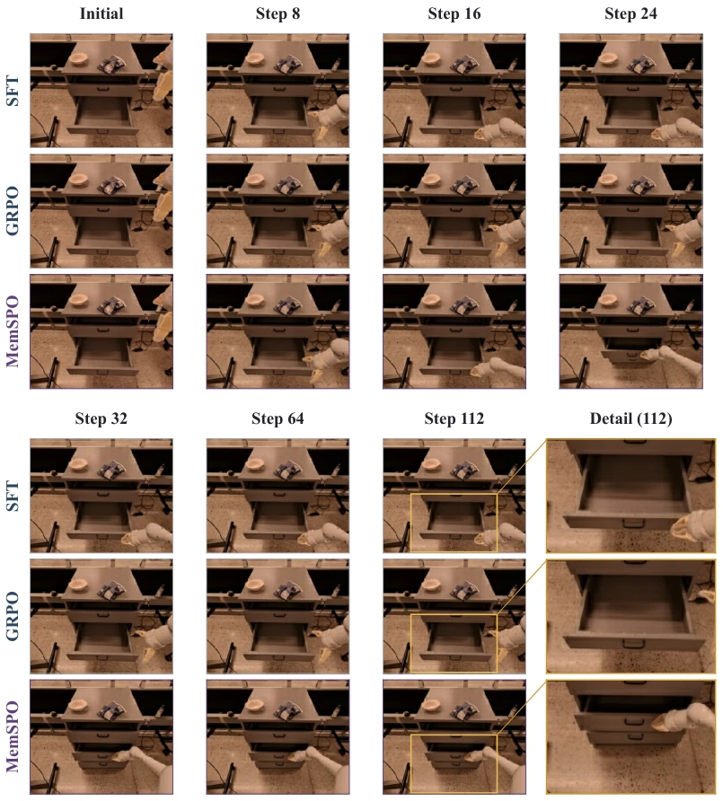
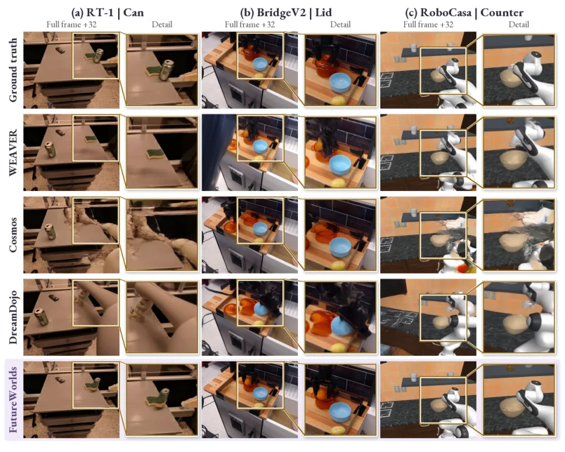
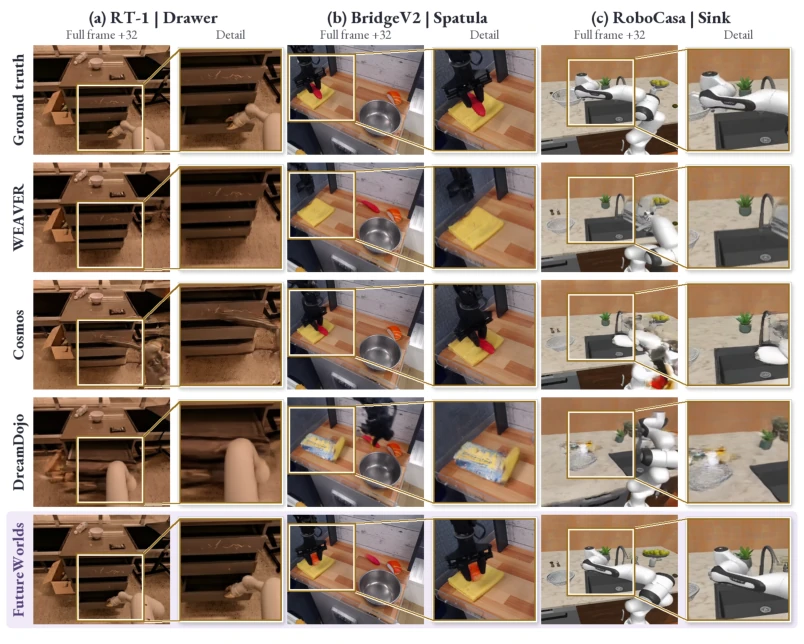
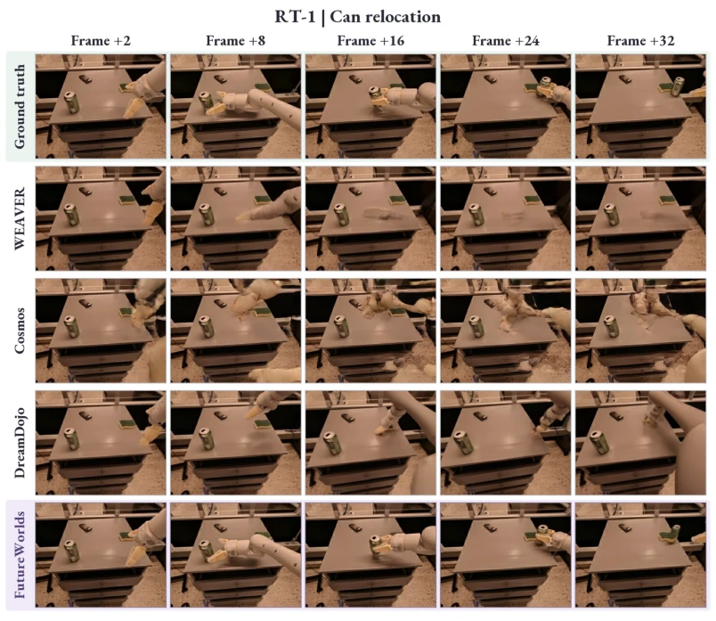

This paper on FutureWorlds serves as a "luxury meal" of "self-reflection" fed to robot world models. It no longer stubbornly adheres to the "rote learning" of supervised learning, but instead initiates a "parallel universe" competition, allowing the model to generate multiple futures itself, which then compete against each other, with updates occurring for the winners. This "self-production and self-consumption" strategy is indeed smarter than simply imitating ground truth data, after all, no matter how complete the ground truth data is, it cannot teach the model how to think in "what ifs". However, this beam search-based reinforcement learning post-training, although yielding outstanding results, causes inference latency to skyrocket; it takes 26 seconds to complete one rollout, which is simply a "slow-motion replay" for real-time control. Furthermore, it relies on discrete autoregressive models; although static information is compressed, the generation process still consumes significant compute. Overall, this is a spectacular performance of walking a tightrope between "generation quality" and "inference efficiency"; although the tightrope is a bit thin, the scenery is indeed nice.
研究动机Motivation
现有的机器人世界模型主要依赖监督微调（SFT），这种训练方式在推理阶段面临严重的“分布偏移”问题：训练时用真值历史，推理时却用预测历史，导致误差随时间累积（Ross et al., 2011; Bengio et al., 2015）。虽然引入强化学习（RL）如 RLVR-World (Wu et al., 2025a) 或 RLIR (Ye et al., 2025) 试图通过序列级奖励来缓解，但核心痛点未解：如何构建高质量的对比样本？如果生成的候选未来过于相似，缺乏区分度，RL 信号就无效；如果差异过大，历史状态难以维护，导致评分与生成条件不匹配。此外，传统 Beam Search 容易陷入局部最优，生成高度相似的序列，无法提供足够的多样性来激发模型学习。因此，亟需一种能平衡候选多样性与历史一致性，并能将相对质量转化为有效学习信号的框架。
Existing robot world models primarily rely on supervised fine-tuning (SFT); this training method faces severe "distribution shift" problems during the inference stage: using ground truth history during training but predicted history during inference leads to error accumulation over time (Ross et al., 2011; Bengio et al., 2015). Although introducing reinforcement learning (RL) such as RLVR-World (Wu et al., 2025a) or RLIR (Ye et al., 2025) attempts to alleviate this through sequence-level rewards, the core pain point remains unsolved: How to construct high-quality contrastive samples? If the generated candidate futures are too similar, lacking distinctiveness, the RL signal becomes ineffective; if the differences are too large, historical states are difficult to maintain, leading to a mismatch between scoring and generation conditions. Furthermore, traditional Beam Search easily falls into local optima, generating highly similar sequences, failing to provide sufficient diversity to stimulate model learning. Therefore, there is an urgent need for a framework that can balance candidate diversity with historical consistency, and can convert relative quality into effective learning signals.

Figure 1: Learning from alternative futures. RT-1 comparison at +32; metrics use full images. FutureWorlds constructs diverse futures, maintains their histories, and learns through MemSPO by com- paring trajectory rewards.
FutureWorlds constructs a "Generate-Maintain-Learn" closed-loop framework. First, supervised initialization is performed based on a multimodal discrete autoregressive model (similar to iVideoGPT). The core innovation lies in the post-training phase: 1. Candidate Construction: Utilizing Diverse Beam Search, balancing model confidence and differences between candidates during the reinforcement learning process to generate multiple different future trajectories. 2. History Maintenance: Introducing "Candidate-Specific Persistent Memory", independently maintaining bounded memory containing initial scene anchors, state anchors, and rolling contexts for each candidate branch, ensuring that generation and scoring use fully matched historical contexts to prevent state drift. 3. Learning Mechanism: Proposing MemSPO (Memory-Conditioned Search-Guided Policy Optimization). This algorithm converts video trajectory rewards into Group-Relative Advantages, based on GRPO and truncation strategy optimization, updating the model using relative quality differences between candidates. The key lies in that policy scoring is strictly based on the memory used when generating the candidate, ensuring the correctness of gradients. The entire process does not require real future frames to participate in generation, only used for calculating rewards, achieving a closed loop from "self-generation" to "self-optimization".

Figure 2: Overview of FutureWorlds. Supervised initialization trains the multimodal world model. MemSPO searches alternative futures, maintains separate histories, and learns from relative trajectory quality. Generation and policy scoring use matching histories.
Evaluated on three datasets: RT-1, BridgeV2, and RoboCasa. Compared to the strongest baseline, FutureWorlds reduced LPIPS metrics on 32-frame prediction by 14.78%, 20.84%, and 9.12% respectively, with PSNR and SSIM also significantly improved. Ablation studies show that only 200 MemSPO updates can bring significant gains, and can support predictions exceeding training duration. Ablation of the memory module shows that retaining full history (initial anchor + rolling window) yields huge performance improvements compared to retaining only recent history or no history (MSE reduced by nearly 60%). Motion evaluation (optical flow error, DINO similarity) proves that the model not only has clearer images but also more accurate object states and motion trajectories. Although inference latency has increased due to beam search, it still outperforms some large video foundation models in parameter efficiency and VRAM usage.

Figure 3: Qualitative comparison at frame 32. Five selected cases on RT-1, BridgeV2, and Robo- Casa comparing four baselines and our method, with full images and matched detail views.

Figure 4: Post-training gains and qualitative improvements. (a,b) LPIPS during SFT and MemSPO training. (c) Frame-32 predictions with matched detail views on three datasets.

Figure 7: Memory ablation at 32 frames. w/o Historical Memory, w/o Initial Anchor, and Full Model. Gains are versus w/o Historical Memory; PSNR and SSIM axes are truncated.

Figure 8: Action-conditioned Wan2.2 adaptation. Action chunks modulate time embeddings, and a history adapter supplies spatial context. Adapters and LoRA parameters are trainable; pretrained weights remain frozen.
其他图片Other Figures

Figure 9: Policy feedback in a learned world model. A selected example for close middle drawer with a fixed RT-1 policy. The two blocks show the same interaction at seven time points; gold boxes mark matched details at step 112.

Figure 10: Additional comparisons of object placement and robot pose. Selected RT-1, BridgeV2, and RoboCasa examples at frame 32. Gold boxes identify matched detail views; model names are abbreviated in the figure.

Figure 11: Additional comparisons of articulated motion and object appearance. Three further selected cases at frame 32, using the same models and display convention as Figure 10.

Figure 12: Temporal comparison on RT-1. The instruction is move green can near sponge. Columns show frames +2, +8, +16, +24, and +32 from the same saved prediction sequence for each method. FutureWorlds follows the can’s displacement toward the sponge more closely, while the displayed baselines largely retain its earlier position.